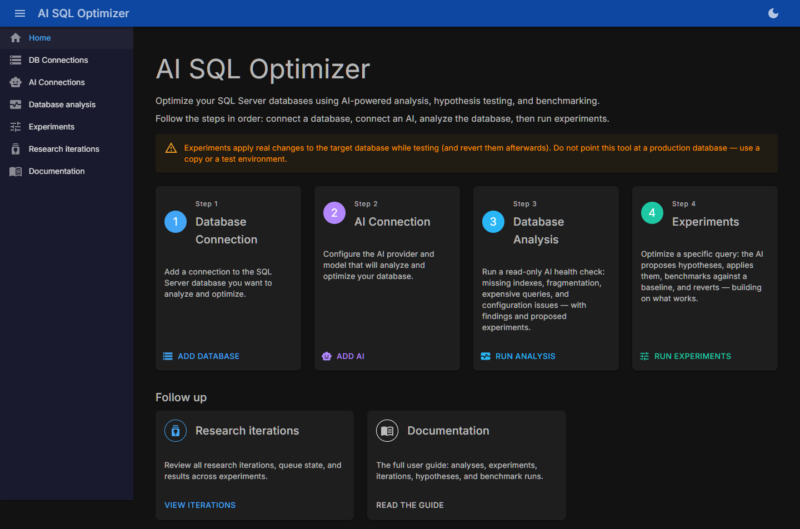
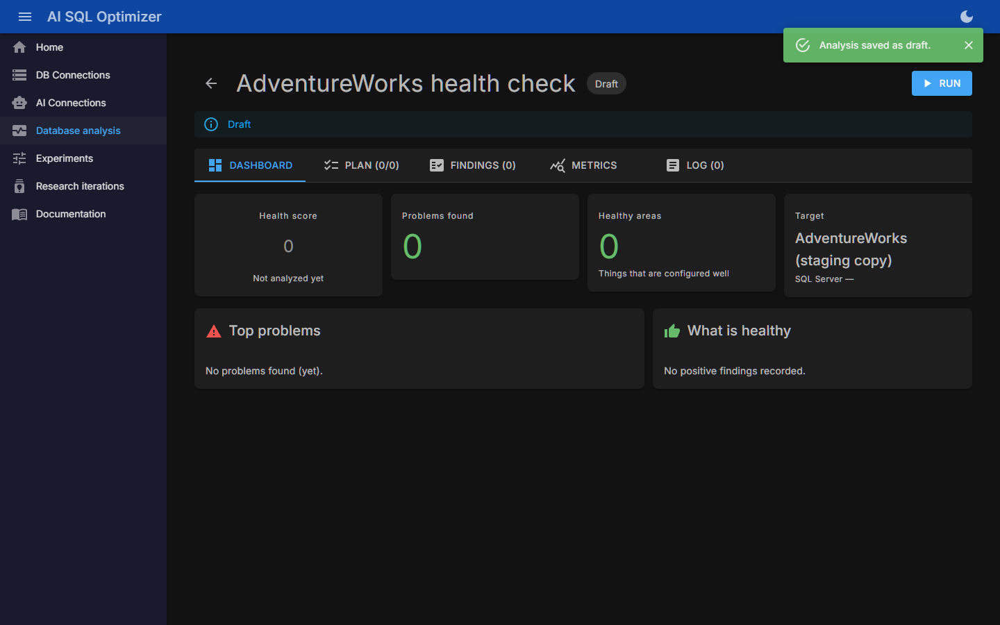
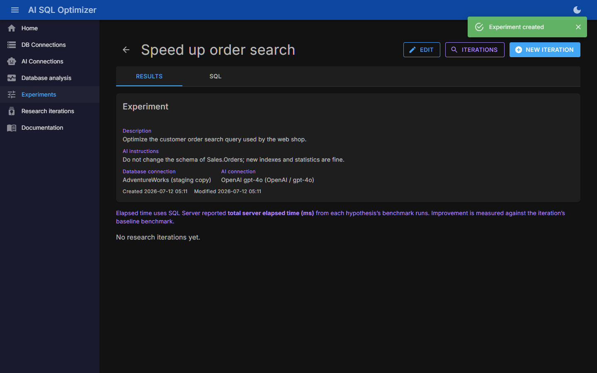
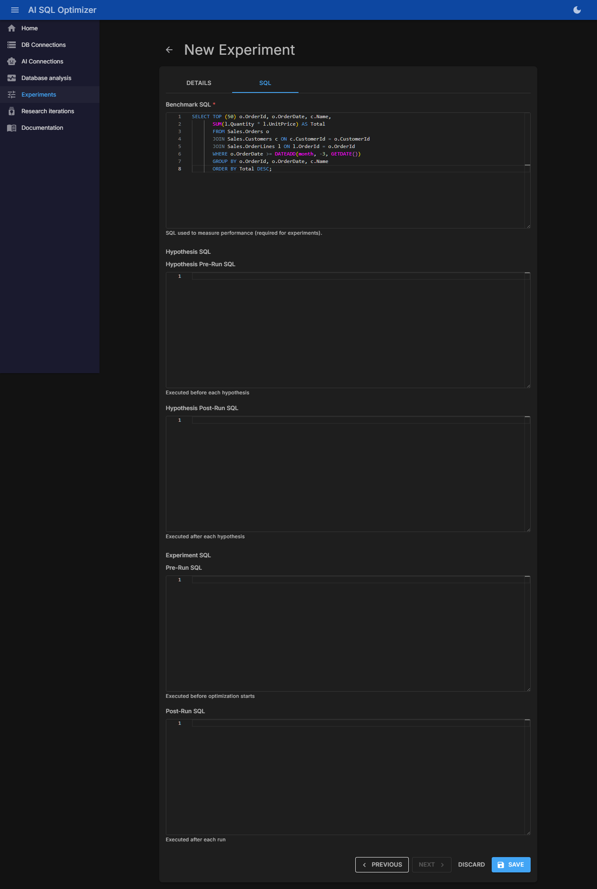

AIOptimizeSql finds real problems and proves out real fixes — it doesn't just guess an index might help, it applies the change, benchmarks it, and reverts it, so you get measured evidence instead of a hunch.
SELECT and DMV access — a read-only account means the AI physically cannot change anything.Three ways it makes SQL Server databases faster.
A broad health check — missing indexes, fragmentation, stale statistics, expensive queries, wait stats, procs, views, configuration. Deterministic checks run first, then the AI investigates and produces findings with severity, evidence, and suggested SQL. Read-only against the target database.
Findings can include a proposed experiment — a ready-made test for that recommendation. One click turns "this index might help" into "this index made the query 63% faster, here are the numbers."
Already know which query is slow? Give it the benchmark SQL, pick a database and an AI, and let it test hypotheses against the real database — measuring instead of guessing.
Instead of an AI guessing, it tests hypotheses against the real database and measures.
Maps the tables, indexes, statistics, and dependencies relevant to your benchmark query.
The query is measured before any changes. Every hypothesis is compared against this.
The AI proposes a concrete optimization, writes the apply and revert SQL, applies it, benchmarks it, and reverts it.
Later hypotheses build on earlier successes, forming chains of compounding optimizations. What regressed is discarded.
Checksums over the involved tables verify optimizations didn't silently change query results.
Home → connect a database → connect an AI → analyze → experiment.




Self-contained single-file executable — no .NET runtime required. Stores its own state in a local SQLite file.
All builds, checksums, and release notes: GitHub Releases
One self-contained executable, SQLite storage, zero configuration. Best for trying it out or single-user desktop/server use.
Web UI plus optional separate worker, backed by Azure SQL / SQL Server. Best for team use and always-on deployments. See the deployment guide.